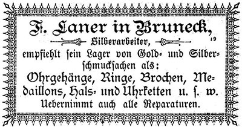
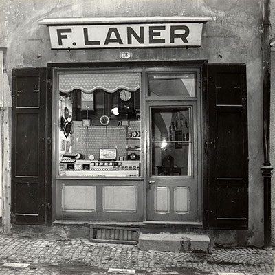
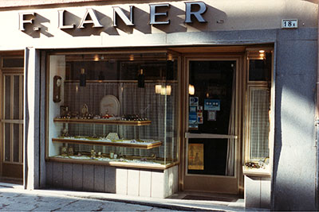
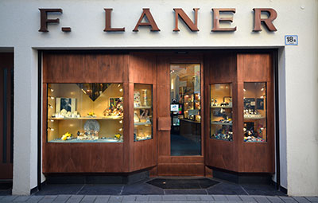

Geschichte
Ein Familienbetrieb mit Tradition seit 1886 in Bruneck.

Die Gründung
Florian Laner, ursprünglich aus Mühlbach stammend, gründet das Goldgeschäft in der historischen Stadtgasse von Bruneck.

Die zweite Generation
Florian übergibt das Geschäft an seine Tochter Friederike. Gemeinsam mit ihrem Mann Wilhelm, einem ausgebildeten Goldschmied, führt sie den Betrieb mit unermüdlicher Willenskraft durch die schweren Nachkriegsjahre.

Die Söhne übernehmen
Die Söhne Norbert und Bernhard übernehmen die Leitung und modernisieren den Familienbetrieb. Mit viel Leidenschaft bauen sie das Sortiment aus und passen es dem Zeitgeist an.

Gegenwart & Zukunft
Edith und Veronika, die beiden Töchter von Norbert, leiten den Betrieb heute in der dritten und vierten Generation mit viel Enthusiasmus, Stil und fundiertem Fachwissen weiter.